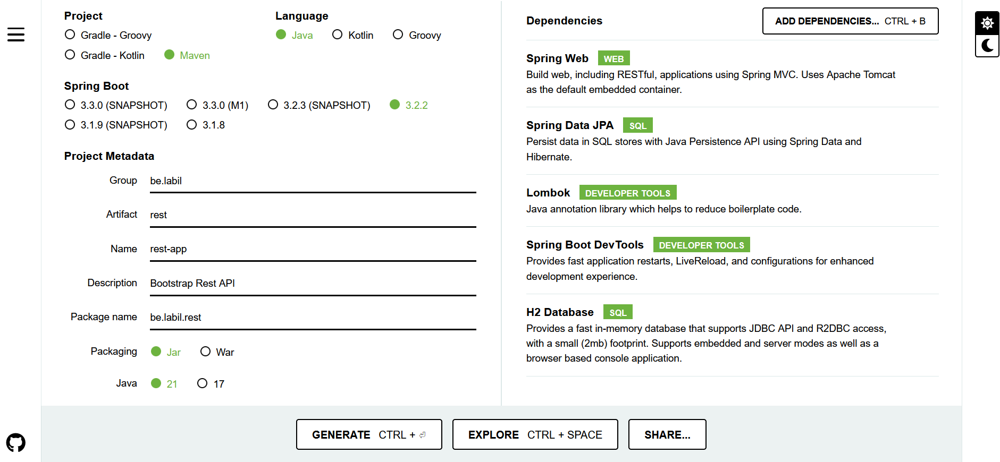
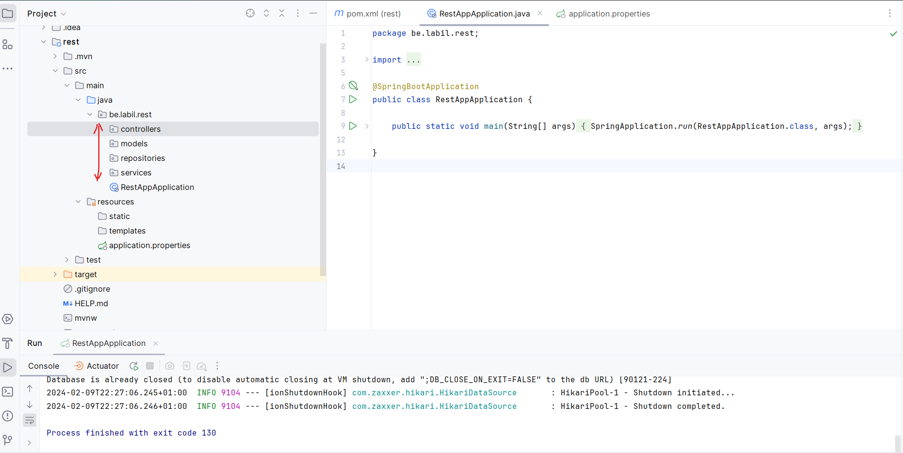
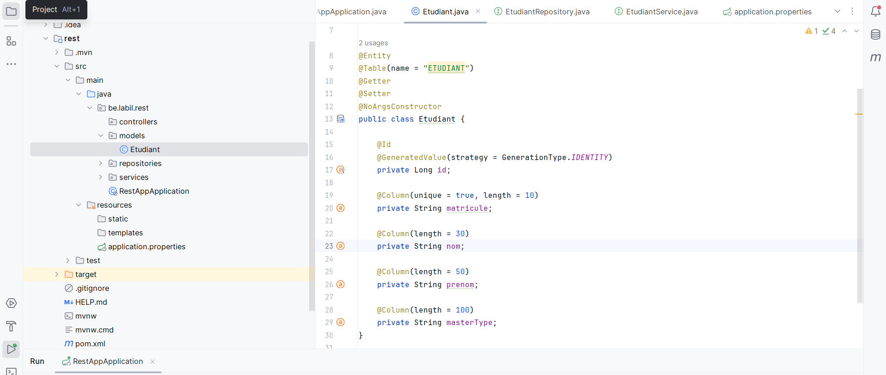
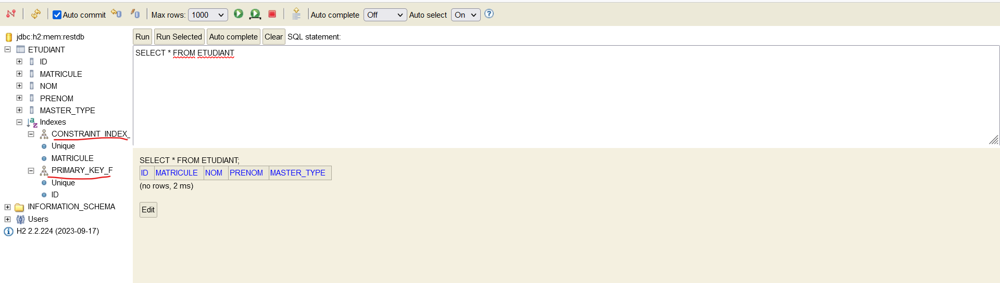
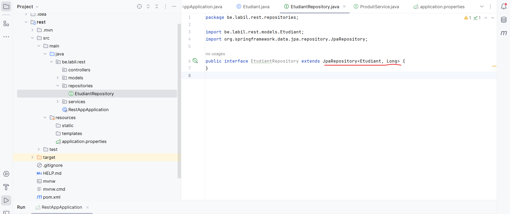
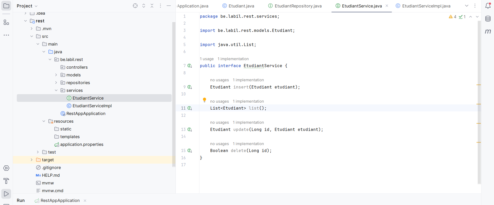
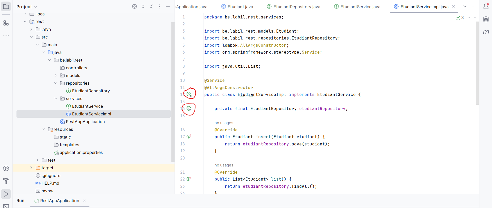
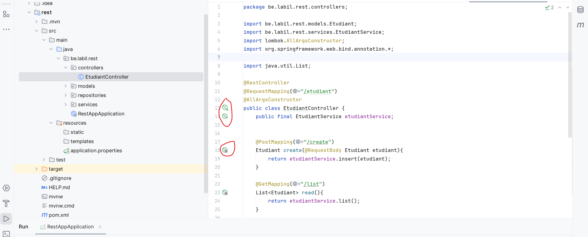
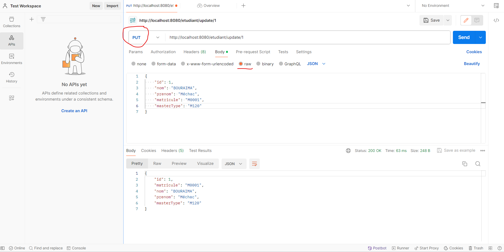
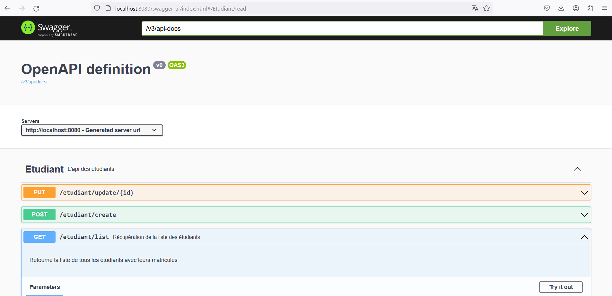

TP 3: BOOTSTRAP REST APP
Objectif: Tu seras capable à la fin de ce TP de fournir des REST API avec SpringBoot
Mots clés
- REST API
- Spring Data JPA
- Spring Web
- LomBok
- H2
- Swagger
Ressources
Code source du TP
Questions
Qu'est ce qu'une API RESTful ?
Ajout des dépendances

- Après avoir choisi les dépendances, générez le projet.
- Ouvrez le projet avec votre IDE et spécifier la version de Java à utiliser.
Stucturation du projet

Connexion à H2
Voir cette rubrique
Persistence de données

Vérifiez la persistence en base de données

Création de repository

Création de service
Dans cette section, nous allons créer un service et son implémentation.

Une implémentation du service avec l'injection de dépendance (EtudiantRepository)

Questions
EtudiantRepository est une interface. Quelle implémentation est fournie ?
Mise en place du controller

Questions
- Quelle est la différence entre
PUT et PATCH ?
- Dans notre controlleur, les modèles sont exposés dans le controller. Une bonne pratique consiste à utiliser les
DTO (Data Transfer Object). Quels sont leurs utilités ?
- Connaissez-vous
GraphQL ? Quel est son fonctionnement ?
Tests fonctionnels

Documentation de l'API (Swagger)
Ajout de la dépendance de Swagger 3
Ajoutez la dépendance de Swagger dans le fichier pom.xml
| <?xml version="1.0" encoding="UTF-8"?>
<project xmlns="http://maven.apache.org/POM/4.0.0" xmlns:xsi="http://www.w3.org/2001/XMLSchema-instance"
xsi:schemaLocation="http://maven.apache.org/POM/4.0.0 https://maven.apache.org/xsd/maven-4.0.0.xsd">
<modelVersion>4.0.0</modelVersion>
<parent>
<groupId>org.springframework.boot</groupId>
<artifactId>spring-boot-starter-parent</artifactId>
<version>3.2.2</version>
<relativePath/> <!-- lookup parent from repository -->
</parent>
<groupId>be.labil</groupId>
<artifactId>rest</artifactId>
<version>0.0.1-SNAPSHOT</version>
<name>rest-app</name>
<description>Bootstrap Rest API</description>
<properties>
<java.version>21</java.version>
</properties>
<dependencies>
<dependency>
<groupId>org.springframework.boot</groupId>
<artifactId>spring-boot-starter-data-jpa</artifactId>
</dependency>
<dependency>
<groupId>org.springframework.boot</groupId>
<artifactId>spring-boot-starter-web</artifactId>
</dependency>
<dependency>
<groupId>org.springframework.boot</groupId>
<artifactId>spring-boot-devtools</artifactId>
<scope>runtime</scope>
<optional>true</optional>
</dependency>
<dependency>
<groupId>com.h2database</groupId>
<artifactId>h2</artifactId>
<scope>runtime</scope>
</dependency>
<dependency>
<groupId>org.projectlombok</groupId>
<artifactId>lombok</artifactId>
<optional>true</optional>
</dependency>
<dependency>
<groupId>org.springframework.boot</groupId>
<artifactId>spring-boot-starter-test</artifactId>
<scope>test</scope>
</dependency>
<!-- Swagger dependencies -->
<dependency>
<groupId>org.springdoc</groupId>
<artifactId>springdoc-openapi-starter-webmvc-ui</artifactId>
<version>2.0.2</version>
</dependency>
<!-- Swagger dependencies -->
</dependencies>
<build>
<plugins>
<plugin>
<groupId>org.springframework.boot</groupId>
<artifactId>spring-boot-maven-plugin</artifactId>
<configuration>
<excludes>
<exclude>
<groupId>org.projectlombok</groupId>
<artifactId>lombok</artifactId>
</exclude>
</excludes>
</configuration>
</plugin>
</plugins>
</build>
</project>
|
Pour Spring Boot 3, c'est la seule configuration à faire afin de permettre Swagger 3
L'UI Swagger est alors disponible à l'adresse http://localhost:8080/swagger-ui/index.html
Le format JSON est disponible à l'adresse http://localhost:8080/v3/api-docs
Nous pouvons ensuite faire quelques ajustements dans les controlleurs afin de fournir plus de description.
| //...
@Tag(name = "Etudiant", description = "L'api des étudiants")
@RestController
@RequestMapping("/etudiant")
@AllArgsConstructor
public class EtudiantController {
public final EtudiantService etudiantService;
@PostMapping("/create")
Etudiant create(@RequestBody Etudiant etudiant){
return etudiantService.insert(etudiant);
}
@Operation(
summary = "Récupération de la liste des étudiants",
description = "Retourne la liste de tous les étudiants avec leurs matricules")
@ApiResponses(value = {
@ApiResponse(responseCode = "200", description = "Opération réussie")
})
@GetMapping("/list")
List<Etudiant> read(){
return etudiantService.list();
}
//...
|

Liens utiles pour Swagger